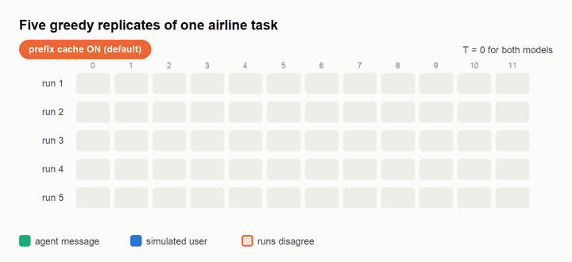
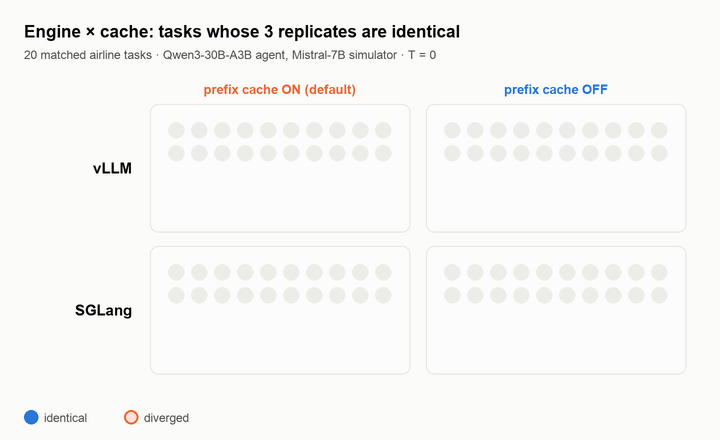
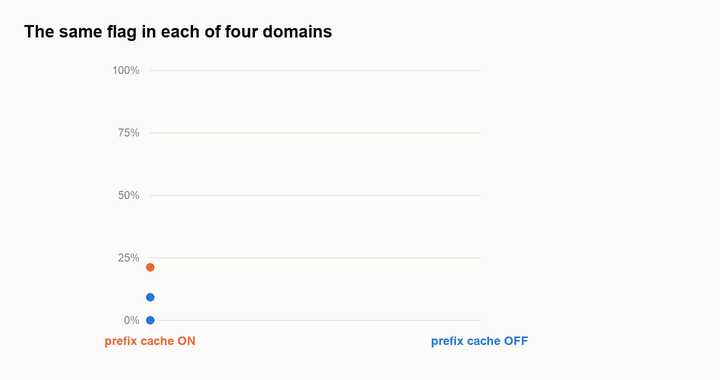
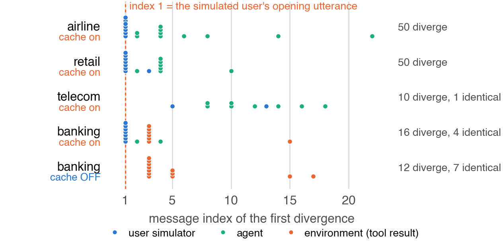
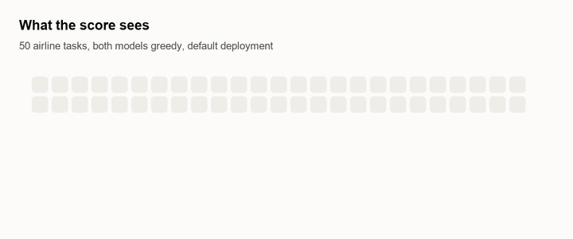

Prefix Caching Can Silently Break Reproducibility in Interactive Agent Evaluation
Vizuara AI Labs, Pune, India

Abstract
Interactive agents are scored by holding a conversation with a simulated user, so the resulting score can reflect variation from the agent, the simulator, the environment and the grader. We identify an additional source of variation at the serving layer. With both conversational models decoded greedily, 0 of 50 τ2-bench airline tasks and 0 of 50 retail tasks were fully reproducible across five replicates, and divergence usually began in the first generated message rather than accumulating over a long dialogue. In a matched 2 × 2 study over two engines and two cache settings, prefix-cache status predicted transcript repeatability exactly: 0 of 20 airline tasks reproduced with caching on, 20 of 20 with it off, on both vLLM and SGLang. Across matched cache-off arms, airline (20/20), retail (20/20) and telecom (11/11) reproduced exactly; banking improved from 4/19 to 7/19, with all 12 residual divergences first appearing at environment tool results, which localises what remains to the environment path without separating its language-model interface from retrieval tie-breaking. The benchmark's reward metric hides 76–84% of these transcript divergences, which helps explain why the problem may go unnoticed. At two replicates per task, the estimated ordering of the variance components remains unstable. These results indicate that cache state should be reported alongside temperature and model version.
The finding
A hidden state variable under every episode
The plan was a temperature factorial to separate agent noise from simulator noise. Its control condition, both models greedy, was expected to be a near-zero floor. It was not near zero. Nothing reproduced, and divergence started at the very first generated message.
The cause turned out not to be the models. Prefix caching reuses attention state for a prompt prefix that an earlier request already computed. It is meant to be a semantics-preserving throughput optimisation and is on by default in both serving stacks we tried: vLLM ships it as automatic prefix caching, SGLang as RadixAttention. It is mutable, shared, cross-request state sitting under a measurement that is usually drawn as if episodes were independent.
A task, a conversation between an agent and a user simulator, tool calls into a database, and a judge. Existing work measures their summed noise or apportions it among these four.
Both models are served by processes that keep state between requests, so what ran before can enter the computation of what runs next. Weights and decoding settings stay fixed.
Run each task R times and compare transcripts message by message on role, text and tool call. A truncated transcript counts as divergence.
Results




What replication costs
Two replicates cannot order the components
On a default deployment the residual infrastructure term is the largest of the three: V̂infra = 0.058 [0.030, 0.090], ahead of the simulator (0.044) and the agent (0.040). Across all ten ways of choosing two replicates from five, the simulator term is larger in four, the agent term in four, and they tie in two.
| R | V̂infra | V̂sim | V̂agent | CI width |
|---|---|---|---|---|
| 2 | 0.040 | 0.090 | −0.010 | 0.140 |
| 3 | 0.060 | 0.060 | 0.013 | 0.073 |
| 4 | 0.065 | 0.050 | 0.023 | 0.065 |
| 5 | 0.058 | 0.044 | 0.040 | 0.058 |
| Cond. | agent, sim T | ICC |
|---|---|---|
| A | 0, 0 | 0.574 |
| B | 0, 1 | 0.387 |
| C | 1, 0 | 0.318 |
| D | 1, 1 | 0.202 |
Both tables were computed on the default cache-on deployment.
What to report
Cache state belongs next to temperature and model version
- The prefix- or radix-cache setting of the serving stacknew
- Model version and decoding temperature
- The number of replicates per task
- The retry policy for failed episodes (τ2-bench retries up to three times by default, which hides unlucky rollouts)
- Whether any part of the environment or grader is a language model
Disabling prefix caching (--no-enable-prefix-caching in vLLM, --disable-radix-cache
in SGLang) is the remedy evaluated here, though it may not be the most efficient one. Transcript identity is
cheap to compute, a comparison over runs already performed, and in these experiments it was much more
sensitive than reward.
Limitations
- One benchmark (τ2-bench). The mechanism study uses one agent–simulator pair, 20 tasks and 3 replicates.
- The design establishes the causal role of the flag, not the arithmetic behind it. Cache hits, evictions and kernel changes were not traced.
- Banking's residual is not separated between its language-model interface and retrieval tie-breaking.
- Conditions B, C and D were not re-run with caching disabled. Telecom evidence is weaker (11 matched tasks). Throughput cost was not measured.
BibTeX
@inproceedings{joshi2026prefix,
title = {Prefix Caching Can Silently Break Reproducibility
in Interactive Agent Evaluation},
author = {Prathamesh Dinesh Joshi and Raj Dandekar and
Rajat Dandekar and Sreedath Panat},
booktitle = {Workshop on Evaluation of Interactive Agents @ NeurIPS 2026},
year = {2026},
url = {https://openreview.net/forum?id=JKNkGx1whd}
}